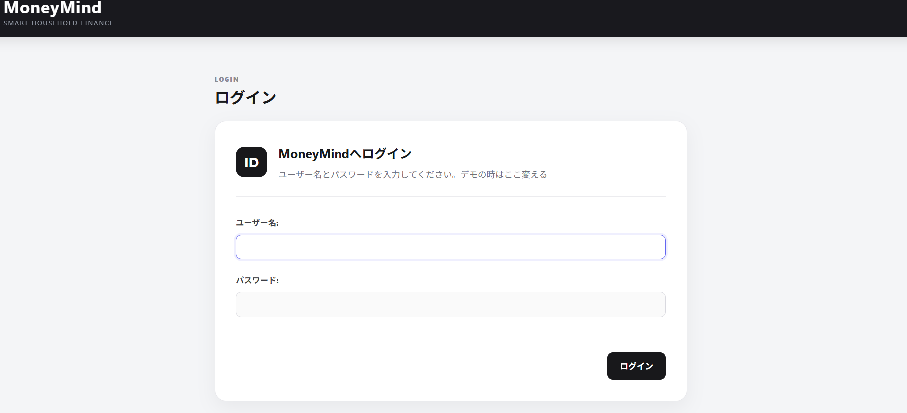
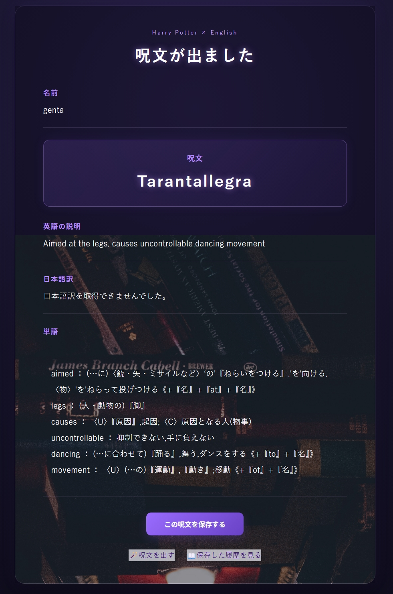

Yuka Kimura
Portfolio
Abaut
木村友香と申します。黙々と作業することが好きな24歳です、もともと動物看護師をしておりました。
前職を退職後に職業訓練に通い、HTML、CSS、PHP、Pythonの基礎を習得しました。
実務経験はありませんが、論理的な思考力と問題解決力を活かし、丁寧かつ効率的に
作業を進めることを意識しています。
新しい技術にも積極的に取り組む姿勢を持ち、常に成長を続けていきたいと考えています。
Skills
HTML/CSS
Python
PHP
★★★★★
★★★★★
★★★★★
License
2024.3 愛玩動物看護師
2026.5 基本情報技術者試験
2026.8 Python 3 エンジニア認定基礎試験
Works

PERSONAL PROJECT 01
MoneyMind 二人で使う家計管理Webアプリ
- Python
- Django
- JavaScript
- SQLite
二人分の家計を、できるだけ手入力を減らして 管理するために自主制作したWebアプリです。 楽天カードや銀行の利用明細をCSVで取り込み、 支出の自動分類や月別集計を行います。 個人・世帯別の収支をグラフで可視化でき、 NISAの評価額もあわせて管理できます。

PERSONAL PROJECT 02
Learning English with HarryPotter ハリーポッターシリーズの呪文で英語学習アプリ
- Python
- Flask
- JavaScript
- SQLite
ハリー・ポッターの呪文を題材に、楽しく英語を学習できるWebアプリをFlaskで制作しました。 外部APIから呪文情報を取得し、日本語訳の表示や英単語の抽出、辞書APIによる意味の検索ができます。 また、学習した呪文の保存・履歴閲覧・Excel形式でのダウンロードにも対応しています。
自主制作⓶
ハリーポッターシリーズの呪文で学ぶ英語
ハリー・ポッターの呪文を題材に、楽しみながら英語を学習できるWebアプリをFlaskで自主制作しました。
外部APIから呪文名と英語の説明文を取得し、日本語訳とあわせて表示します。
説明文から英単語を抽出し、NLTKを用いて単語を原形化したうえで、辞書APIから日本語の意味を取得できるようにしました。
学習した呪文はユーザー名とともにデータベースへ保存でき、履歴の閲覧やExcel形式でのダウンロードにも対応しています。
Flaskによる画面遷移やフォーム処理に加え、外部APIとの連携、テキスト処理、SQLiteを用いたデータ管理を実装しました。
デプロイしたら日本語訳が出なくなってしまったので直す
職業訓練コーナー
ああああああ
黙々と作業することが好きな24歳です、もともと動物看護師をしておりました。
前職を退職後に職業訓練に通い、HTML、CSS、PHP、Pythonの基礎を習得しました。
実務経験はありませんが、論理的な思考力と問題解決力を活かし、丁寧かつ効率的に
作業を進めることを意識しています。
職業訓練コーナー
ああああああ
黙々と作業することが好きな24歳です、もともと動物看護師をしておりました。
前職を退職後に職業訓練に通い、HTML、CSS、PHP、Pythonの基礎を習得しました。
実務経験はありませんが、論理的な思考力と問題解決力を活かし、丁寧かつ効率的に
作業を進めることを意識しています。